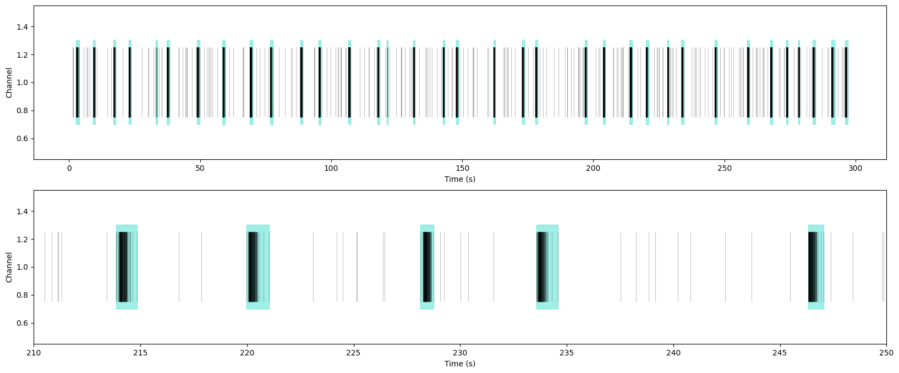
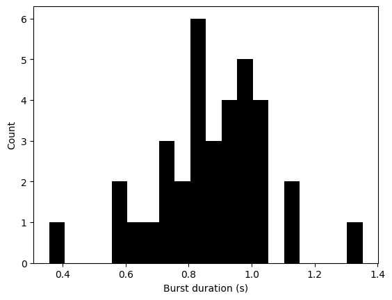

MaxInterval Burst Detection Algorithm (Python/Matlab)
Published:
Demo
Python Project Link
Matlab Project Links
A Max Interval (MI) burst detection algorithm was created to identify individual bursts. MI is a fixed threshold-based method for identifying bursts that uses five fixed threshold parameters (maximum ISI at start of the burst, maximum ISI in burst, minimum burst duration, minimum IBI, and minimum number of spikes within burst) to identify, merge, and exclude potential bursts. The values for these parameters are chosen a priori.
The algorithm is separated into three phases:
-
Burst detection – where a burst is defined as starting when two consecutive spikes have an ISI less than the maximum ISI at start of the burst. The end of the burst is determined when two spikes have an ISI greater than the maximum ISI in burst. The last spike of the previous burst and the first spike of the current burst will be used to calculate the IBI. For the first burst, there is no previous IBI.
-
Merge bursts – any pair of bursts that have an IBI less than the minimum IBI will be merged into a single burst.
-
Quality control – removes any small burst less than the minimum burst duration or has less than minimum number of spikes in burst. This step can potentially delete all spikes. The bursts are stored in a MATLAB cell array to permit detailed analysis of burst dynamics.
Import libraries
import numpy as np
import pandas as pd
import matplotlib.pyplot as plt
from matplotlib.patches import Rectangle
Load data
spiketrain = pd.read_csv("/content/drive/MyDrive/spiketrain_example.csv")
spiketrain.head()
| Unnamed: 0 | Time (s) | |
|---|---|---|
| 0 | 0 | 1.35040 |
| 1 | 1 | 1.52336 |
| 2 | 2 | 1.56696 |
| 3 | 3 | 2.59712 |
| 4 | 4 | 2.74472 |
Visualize data
Data are spike times of action potentials detected by a single electrode.
f = plt.figure(figsize=(20, 8), constrained_layout=False)
grid = f.add_gridspec(2, 3)
plt.subplot(grid[0,0:3])
plt.eventplot(spiketrain["Time (s)"], color='black', linelengths=0.5, linewidths=0.75, alpha=0.35)
plt.ylabel("Channel")
plt.subplot(grid[1,0:3])
plt.eventplot(spiketrain["Time (s)"], color='black', linelengths=0.5, linewidths=0.75, alpha=0.35)
plt.xlabel("Time (s)")
plt.ylabel("Channel")
plt.xlim([210,250])
(210.0, 250.0)

Max Interval Burst Detection
A Python- based Max Interval (MI) burst detection algorithm was created to identify individual bursts. MI is a fixed threshold-based method for identifying bursts that uses five fixed threshold parameters (maximum ISI at start of the burst, maximum ISI in burst, minimum burst duration, minimum IBI, and minimum number of spikes within burst) to identify, merge, and exclude potential bursts. The values for these parameters are chosen a priori.
def maxInterval(spiketrain, max_begin_ISI=0.17, max_end_ISI=0.3, min_IBI=0.2, min_burst_duration=0.01,
min_spikes_in_burst=3):
allBurstData = {}
'''
Phase 1 - Burst Detection
Here a burst is defined as starting when two consecutive spikes have an
ISI less than max_begin_ISI apart. The end of the burst is given when two
spikes have an ISI greater than max_end_ISI.
Find ISIs closer than max_begin_ISI and end with max_end_ISI.
The last spike of the previous burst will be used to calculate the IBI.
For the first burst, there is no previous IBI.
'''
inBurst = False
burstNum = 0
currentBurst = []
for n in range(1, len(spiketrain)):
ISI = spiketrain[n] - spiketrain[n - 1]
if inBurst:
if ISI > max_end_ISI: # end the burst
currentBurst = np.append(currentBurst, spiketrain[n - 1])
allBurstData[burstNum] = currentBurst
currentBurst = []
burstNum += 1
inBurst = False
elif (ISI < max_end_ISI) & (n == len(spiketrain) - 1):
currentBurst = np.append(currentBurst, spiketrain[n])
allBurstData[burstNum] = currentBurst
burstNum += 1
else:
currentBurst = np.append(currentBurst, spiketrain[n - 1])
else:
if ISI < max_begin_ISI:
currentBurst = np.append(currentBurst, spiketrain[n - 1])
inBurst = True
# Calculate IBIs
IBI = []
for b in range(1, burstNum):
prevBurstEnd = allBurstData[b - 1][-1]
currBurstBeg = allBurstData[b][0]
IBI = np.append(IBI, (currBurstBeg - prevBurstEnd))
'''
Phase 2 - Merging of Bursts
Here we see if any pair of bursts have an IBI less than min_IBI; if so,
we then merge the bursts. We specifically need to check when say three
bursts are merged into one.
'''
tmp = allBurstData
allBurstData = {}
burstNum = 0
for b in range(1, len(tmp)):
prevBurst = tmp[b - 1]
currBurst = tmp[b]
if IBI[b - 1] < min_IBI:
prevBurst = np.append(prevBurst, currBurst)
allBurstData[burstNum] = prevBurst
burstNum += 1
if burstNum >= 2:
allBurstData[burstNum] = currBurst
'''
Phase 3 - Quality Control
Remove small bursts less than min_bursts_duration or having too few
spikes less than min_spikes_in_bursts. In this phase we have the
possibility of deleting all spikes.
'''
tooShort = 0
tmp = allBurstData
allBurstData = {}
burstNum = 0
if len(tmp) > 1:
for b in range(len(tmp)):
currBurst = tmp[b]
if len(currBurst) <= min_spikes_in_burst:
tooShort +=1
elif currBurst[-1] - currBurst[0] <= min_burst_duration:
tooShort += 1
else:
allBurstData[burstNum] = currBurst
burstNum += 1
return allBurstData, tooShort
Detect Bursts
allBurstData, _ = maxInterval(spiketrain["Time (s)"].values)
print(f"MaxInterval detected {len(allBurstData)} bursts.")
MaxInterval detected 35 bursts.
Plot the results
f = plt.figure(figsize=(20, 8), constrained_layout=False)
grid = f.add_gridspec(2, 3)
plt.subplot(grid[0,0:3])
plt.eventplot(spiketrain["Time (s)"], color='black', linelengths=0.5, linewidths=0.75, alpha=0.25)
for b in allBurstData:
burst_start = allBurstData[b][0]
burst_duration = allBurstData[b][-1]-burst_start
rect = Rectangle((burst_start, 0.7), burst_duration, 0.6, alpha=0.5, edgecolor='turquoise', facecolor='turquoise')
plt.gca().add_patch(rect)
plt.ylabel("Channel")
plt.subplot(grid[1,0:3])
plt.eventplot(spiketrain["Time (s)"], color='black', linelengths=0.5, linewidths=0.75, alpha=0.25)
for b in allBurstData:
burst_start = allBurstData[b][0]
burst_duration = allBurstData[b][-1]-burst_start
rect = Rectangle((burst_start, 0.7), burst_duration, 0.6, alpha=0.5, edgecolor='turquoise', facecolor='turquoise')
plt.gca().add_patch(rect)
plt.xlabel("Time (s)")
plt.ylabel("Channel")
plt.xlim([210,250])
(210.0, 250.0)

Calculate some basic burst features
# Inter-burst-interval
ibi = []
for b in range(len(allBurstData)-1):
ibi.append(allBurstData[b+1][0]-allBurstData[b][-1])
# Burst duration
duration = [allBurstData[b][-1]-allBurstData[b][0] for b in range(len(allBurstData))]
plt.hist(ibi, bins=20, color='black')
plt.xlabel("Inter-burst-interval (s)")
plt.ylabel("Count")
Text(0, 0.5, 'Count')

plt.hist(duration, bins=20, color='black')
plt.xlabel("Burst duration (s)")
plt.ylabel("Count")
Text(0, 0.5, 'Count')
